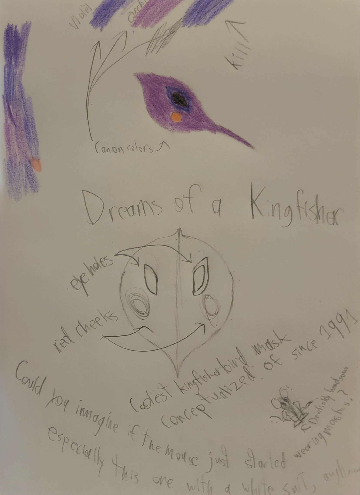

Made last Tuesday with some help from Amy. She effectively chose the samples we were going to use, and I churned up a cool little string loop.
"No Surprises Snippet"
This is a small bit of No Surprises by Radiohead. Particularly, just the beginning bit, because I wanted to demo some instruments.
"Fiberglass Monkey"
I've been singing a lot more to myself as of late, and I want to, like... do that, so I've been thinking of covering songs. I'm still embarrassed about my voice, but that's just gonna be me forever I think. Anywho, this one is a cover of Fiberglass Monkey by Lemon Demon.
"jacked up opener"
I did a TON of shit on Monday, starting with this. When I made it, I was sort of conceptualizing an album, with this being the first track. Don't think that'll come to fruition, because it probably won't, but cool idea, right?
"yuppy guitar"
This is the second thing I made on Monday, and it was pretty alright, I think. No Mozart Concerto certainly, but that guy also never heard of Lemon Demon, so what does he know?
"Ana Ng"
This is a cover of Ana Ng - if you can believe it - by They Might Be Giants. Really good song, IMO, which is why I'm making a cover of it.
I had a vision of a mask of a kingfisher bird. There's quite a bit of text on the page. From top to bottom, left to right, it says:
"Violet", "Orchid", "Kill", "Canon colors", "Dreams of a Kingfisher", "eye holes", "red cheeks", "Coolest kingfisher bird mask conceptualized of since 1991", "Could you imagine if the mouse just started wearing masks?", "Devilishly handsome", and "especially this one with a white suit, augh..."

Although a colored version of the front-facing mask wasn't made initially, through recent breakthroughs in Digital Image Recovery (DIR), we can show you what this mask would've looked like from the front, colored!